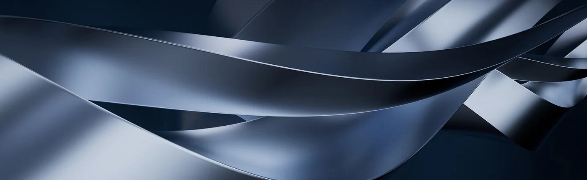
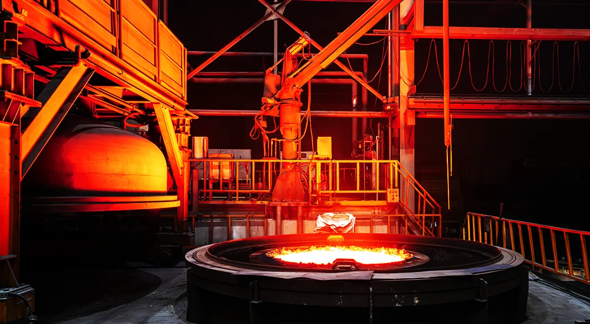
01 / COMPANY
회사소개
축적된 경험과 기술력, 제조 품질에 대한 원강금속의 원칙을 소개합니다.
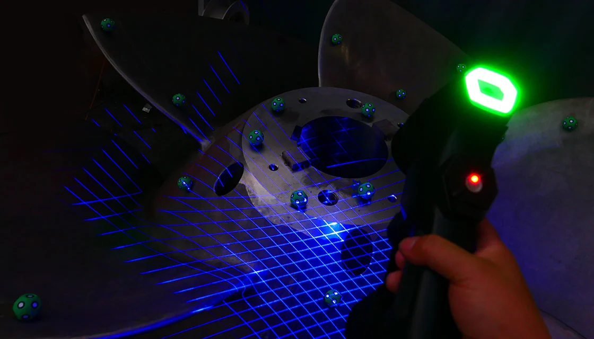
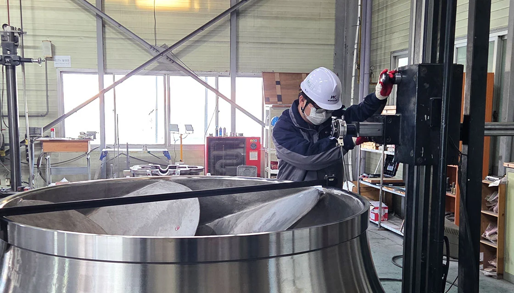
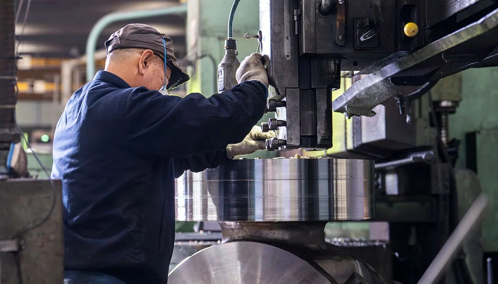
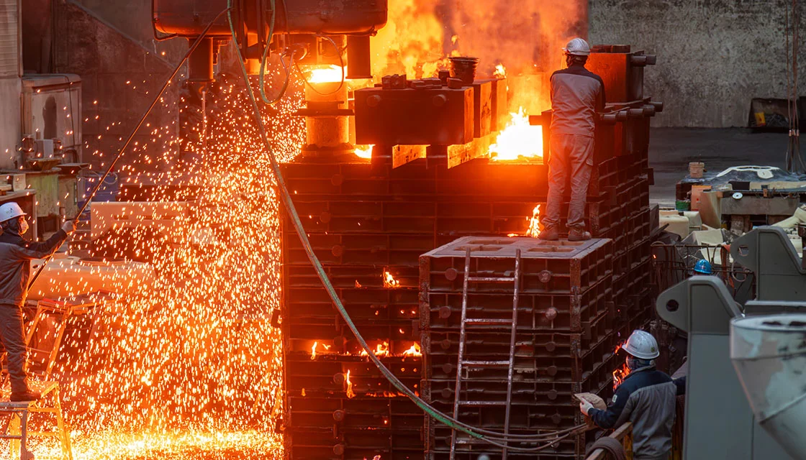
품질의 차이를 만듭니다.
원강금속이 지켜온 제조의 기준
선도기업의 자부심, 맞춤형 강철주조
02 / ACHIEVEMENT
기업 주요 성과
원강금속의 역사와 생산 역량을 숫자로 확인합니다.
1988창사 연도
1,000t+연간 최대 수출 중량
40%+듀플렉스 계열 강종 비중
03 / PRODUCTS
대표제품
일반 펌프부품에서 산업기계부품까지 대표 제품군 4가지를 소개합니다.


04 / MANUFACTURING
생산·기술
설계 검토부터 공정 관리와 제품 검사까지, 원강금속의 제조 역량을 소개합니다.
PROCESS & TECHNOLOGY01 — 05
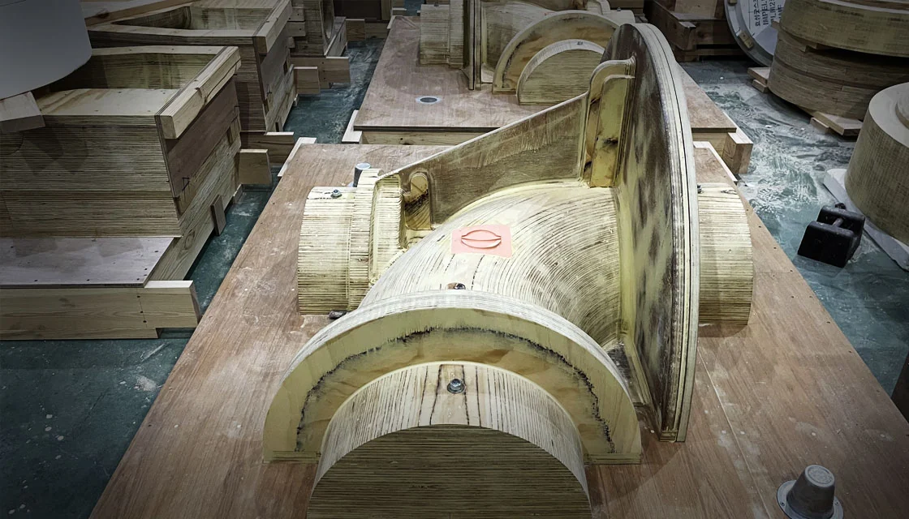
WONKANG METAL / 0101 / PRODUCTION PROCESS
생산공정
검토 → 목형 → 주입 → 열처리 → 후처리 → 3D스캔 → 가공 → 제품검사. 설계에서 최종 검수까지, 공정을 유기적으로 연결합니다.
자세히 보기02 / PRODUCTION EQUIPMENT
생산설비
주조·정련·열처리·가공 설비를 바탕으로 제품의 요구 조건에 대응합니다. 공정에 맞는 설비 운용으로 제조의 완성도를 높입니다.
자세히 보기03 / CORE TECHNOLOGY
핵심 주조기술
MAGMASOFT 주조 해석, 정련과 주물사 관리, 듀플렉스 강종의 열처리까지. 소재와 공정에 대한 이해로 제품의 완성도를 높입니다.
자세히 보기05 / QUALITY CERTIFICATION
품질·인증
공식 공개 인증자료를 통해 원강금속의 품질 기준을 확인합니다.
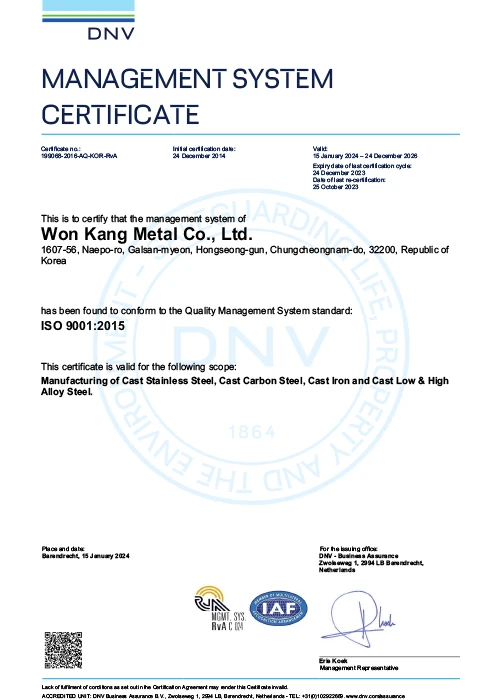
01ISO 9001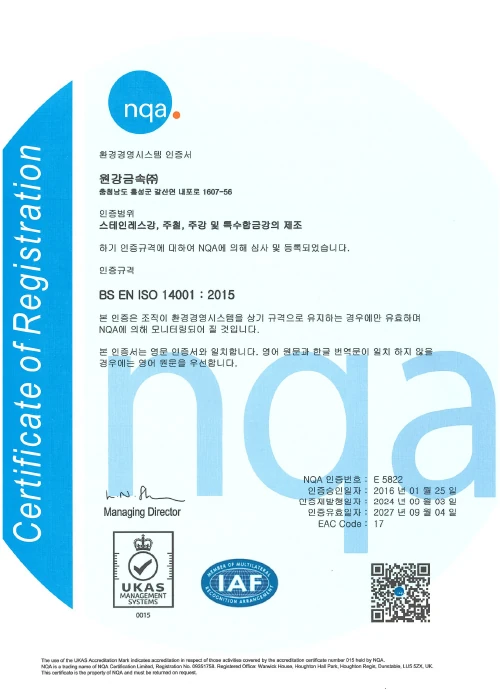
02ISO 14001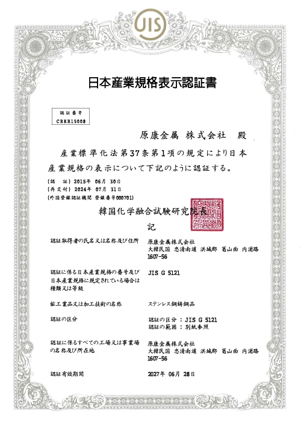
03JIS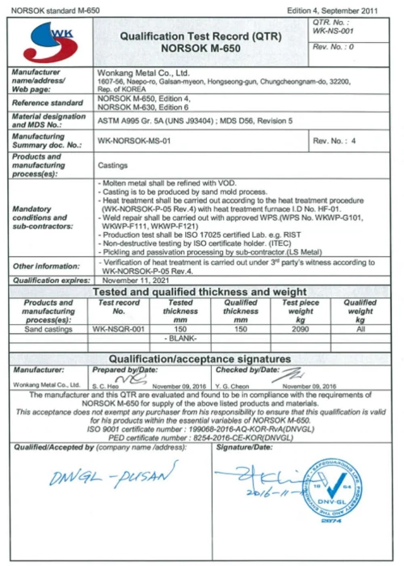
04NORSOK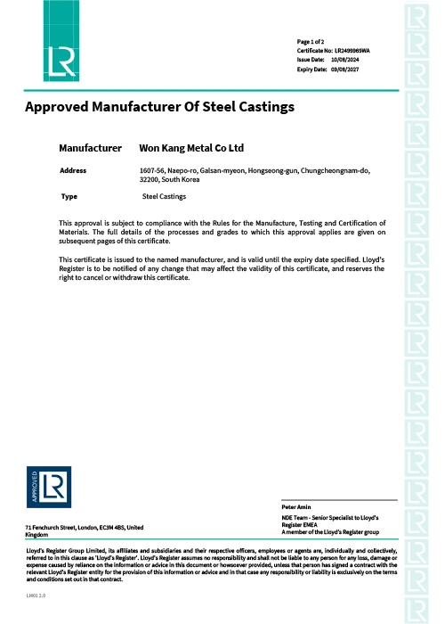
05LR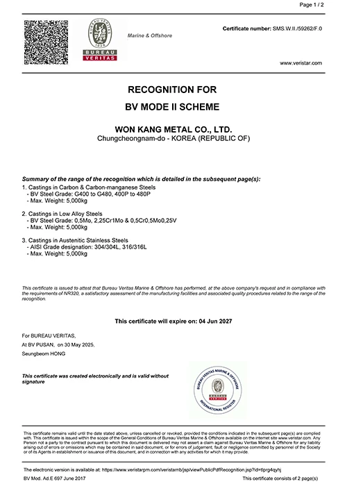
06BV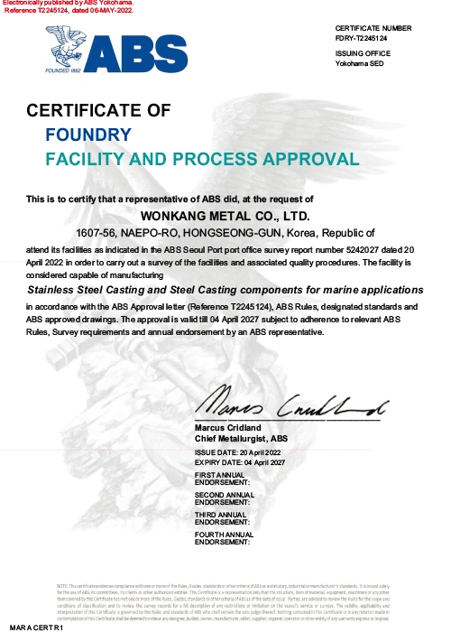
07ABS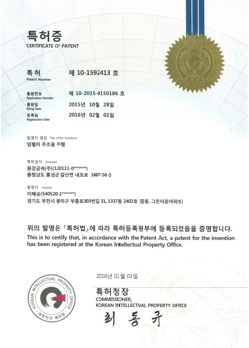
08특허증인증 범위와 유효기간은 개별 공식 자료에서 확인해 주세요.원강금속 공식 인증자료 ↗
비즈니스
06 / BUSINESS PARTNERS
신뢰를 바탕으로 이어온 파트너십
다양한 산업 분야의 파트너와 협력하며 제조 역량을 발전시켜 왔습니다.
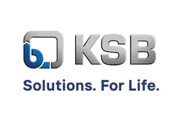
KSB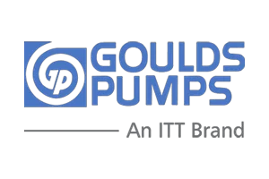
GOULDS PUMPS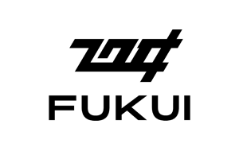
FUKUI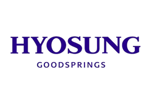
HYOSUNG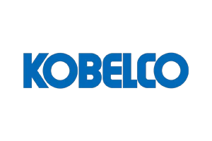
KOBELCO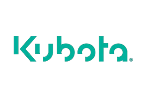
Kubota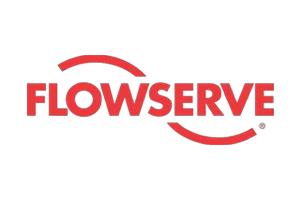
FLOWSERVE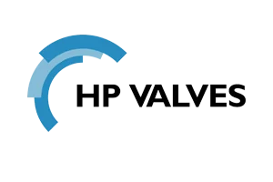
HP VALVES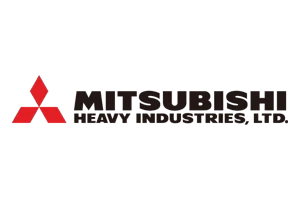
MITSUBISHI HEAVY INDUSTRIES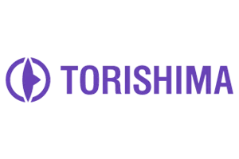
TORISHIMA